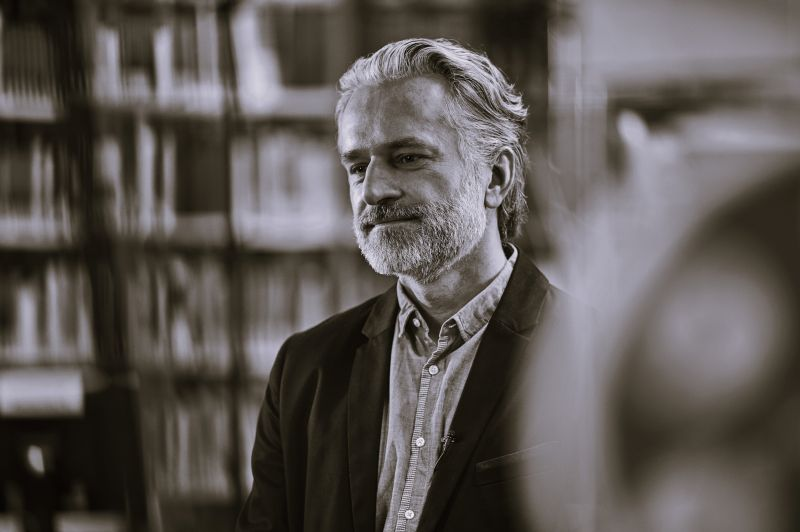

Thomas Mrokon ist Professor für Entwerfen und Digitale Konstruktion an der Hochschule Mainz und seit 2024 auch Studiengangsleiter Architektur.
Mit den mehrfach ausgezeichneten Gebäuden „Haus der Astronomie, Heidelberg" und „ESO Supernova, Garching" konnte er seine Expertise im Bereich Computational Design und digitaler Fertigung mit praktischer Innovationskraft kombinieren.
Nach einer unternehmerischen Phase mit eigenem Startup (monomer), folgte die Mitarbeit in der neuen Architektur-Abteilung bei Drees&Sommer, bis 2021 der Ruf an die Hochschule Mainz kam.
Neben einem weiteren Fokus auf immersive Raumlehre mit VR/AR-Tools, entwickelte sich seit 2023 der Schwerpunkt KI-Anwendungen in der Bauwirtschaft, welcher zwischenzeitlich in einem eigenen Lehrmodul vermittelt wird.
Der Schwerpunkt beim Einsatz von digitalen Werkzeugen liegt auf deren transformativer Wirkung in der gesamten Wertschöpfungskette. Daraus ergeben sich sowohl individuelle als auch gesellschaftliche Implikationen für alle Lebensbereiche.
Seit 2023 hält Thomas Mrokon regelmäßig Keynotes und Impulsvorträge rund um das Thema KI für unterschiedliche Zielgruppen.

Meine Vision: Eine Welt in der Technologie nicht nur zur Effizienzsteigerung oder als Bedrohung eingesetzt wird, sondern als Mittel zur Freiheitswahrung, Persönlichkeitsentfaltung und Sinnstiftung.
OFFLINE ist das neue Online.